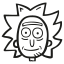

<div class="relative bg-white">
    <div class="max-w-7xl mx-auto px-4 sm:px-6">
      <div class="flex justify-between items-center border-b-2 border-gray-100 py-6 md:justify-start md:space-x-10">
        <div class="flex justify-start lg:w-0 lg:flex-1">
          <a href="#">
            <span class="sr-only">Workflow</span>
            
          </a>
        </div>
        <div class="-mr-2 -my-2 md:hidden">
          <button (click)="setIsOn()" type="button" class="bg-white rounded-md p-2 inline-flex items-center justify-center text-gray-400 hover:text-gray-500 hover:bg-gray-100 focus:outline-none focus:ring-2 focus:ring-inset focus:ring-indigo-500">
            <span class="sr-only">Open menu</span>
            <!-- Heroicon name: outline/menu -->
            <svg class="h-6 w-6" xmlns="http://www.w3.org/2000/svg" fill="none" viewBox="0 0 24 24" stroke="currentColor" aria-hidden="true">
              <path stroke-linecap="round" stroke-linejoin="round" stroke-width="2" d="M4 6h16M4 12h16M4 18h16" />
            </svg>
          </button>
        </div>
        <nav class="hidden md:flex space-x-10">
          <a [routerLink]="[ 'episodes' ]" class="text-base font-medium text-gray-500 hover:text-gray-900">
            Episodios
          </a>
          <a [routerLink]="[ 'characters' ]" class="text-base font-medium text-gray-500 hover:text-gray-900">
            Personajes
          </a>
        </nav>
        <div class="hidden md:flex items-center justify-end md:flex-1 lg:w-0">
        <!-- Right Menu -->
        </div>
      </div>
    </div>
  
    <!--
      Mobile menu
    -->
    <div [hidden]="isOn" class="absolute top-0 inset-x-0 p-2 transition transform origin-top-right md:hidden">
      <div class="rounded-lg shadow-lg ring-1 ring-black ring-opacity-5 bg-white divide-y-2 divide-gray-50">
        <div class="pt-5 pb-6 px-5">
          <div class="flex items-center justify-between">
            <div>
              
            </div>
            <div class="-mr-2">
              <button (click)="setIsOn()" type="button" class="bg-white rounded-md p-2 inline-flex items-center justify-center text-gray-400 hover:text-gray-500 hover:bg-gray-100 focus:outline-none focus:ring-2 focus:ring-inset focus:ring-indigo-500">
                <span class="sr-only">Close menu</span>
                <!-- Heroicon name: outline/x -->
                <svg class="h-6 w-6" xmlns="http://www.w3.org/2000/svg" fill="none" viewBox="0 0 24 24" stroke="currentColor" aria-hidden="true">
                  <path stroke-linecap="round" stroke-linejoin="round" stroke-width="2" d="M6 18L18 6M6 6l12 12" />
                </svg>
              </button>
            </div>
          </div>
          <div class="mt-6">
            <nav class="grid gap-y-8">
              <a [routerLink]="[ 'episodes' ]" (click)="setIsOn()" class="-m-3 p-3 flex items-center rounded-md hover:bg-gray-50">
                <!-- Heroicon name: outline/chart-bar -->
                <svg class="flex-shrink-0 h-6 w-6 text-indigo-600" xmlns="http://www.w3.org/2000/svg" fill="none" viewBox="0 0 24 24" stroke="currentColor" aria-hidden="true">
                  <path stroke-linecap="round" stroke-linejoin="round" stroke-width="2" d="M9 19v-6a2 2 0 00-2-2H5a2 2 0 00-2 2v6a2 2 0 002 2h2a2 2 0 002-2zm0 0V9a2 2 0 012-2h2a2 2 0 012 2v10m-6 0a2 2 0 002 2h2a2 2 0 002-2m0 0V5a2 2 0 012-2h2a2 2 0 012 2v14a2 2 0 01-2 2h-2a2 2 0 01-2-2z" />
                </svg>
                <span class="ml-3 text-base font-medium text-gray-900">
                  Episodios
                </span>
              </a>
  
              <a [routerLink]="[ 'characters' ]" (click)="setIsOn()" class="-m-3 p-3 flex items-center rounded-md hover:bg-gray-50">
                <!-- Heroicon name: outline/cursor-click -->
                <svg class="flex-shrink-0 h-6 w-6 text-indigo-600" xmlns="http://www.w3.org/2000/svg" fill="none" viewBox="0 0 24 24" stroke="currentColor" aria-hidden="true">
                  <path stroke-linecap="round" stroke-linejoin="round" stroke-width="2" d="M15 15l-2 5L9 9l11 4-5 2zm0 0l5 5M7.188 2.239l.777 2.897M5.136 7.965l-2.898-.777M13.95 4.05l-2.122 2.122m-5.657 5.656l-2.12 2.122" />
                </svg>
                <span class="ml-3 text-base font-medium text-gray-900">
                  Personajes
                </span>
              </a>
  
            </nav>
          </div>
        </div>
      </div>
    </div>
  </div>
  